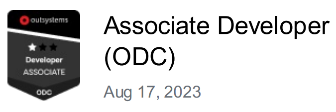

Certifications
Outsystems
-
Outsystems Associate Reactive developer

-
Outsystems Associate Developer (ODC)

Mendix
-
Mendix Rapid Developer

Qlik
-
Qlik Data Literacy Certification

Work Experience
Tech Analyst
Deloitte
Jan 2023 - Present
Lisbon, Portugal
Outsystems developer with experience in Appian.
Experience working under Agile and Kanban Methodologies.
SQL, CSS, HTML, API.
Student Researcher
C2TN - Centro de Ciências e Tecnologias Nucleares
Sep 2020 - Feb 2023
Loures, Portugal
- Synthesis of peptides that interfere with RANK-TRAF6 pathway using a novel method of ultrasonic solid phase peptide synthesis, as well as radiolabeling and medical imaging using PET-SPECT-CT Scan.
- Received training on radiation protection and radiopharmaceutical manipulation.
- Assembled and fully calibrated a pre-clinical medical imaging micro-PET-SPECT-CT equipment.
- Assured quality of procedures and validity of medical imaging scans using radiotracers such as Ga-67, Tc-99m, and In-111.
- ESI-MS; RP-HPLC.
Engineering & Healthcare Associate Consultant
Robert Walters
Mar 2022 - Dec 2022
Lisbon, Portugal
Consultancy in Robert Walters is divided into two main tasks:
- Business Development and Management
- Engineering Consultancy, Headhunting, Key Account Management, Recruiting, and Career Advisory
In Business Development and Management, we are responsible for tasks such as:
- Business and Business model analysis;
- Elaborating business proposals and negotiation with the client.
- Participating and leading meetings with CEOs, CTOs, and HR Directors of some of the largest engineering firms and companies.
In Engineering Consultancy, Headhunting, Key Account Management, Recruiting, Career Advisory, we are responsible for:
- Analysing client requirements for their company, as to present consulty advice about market trends of specific sectors.
- Pro-actively search for high-level candidates, by sector and activity.
- Interviewing candidates and preparing shortlists and presentations for client analysis.
- Developing Business and Managing accounts;
Student Researcher
ICNAS - Institute for Nuclear Sciences Applied to Health
Jul 2018 - Sep 2018
Coimbra, Portugal
Two-month internship where I:
- Participated in the production of Cu-61, Cu-64 & Ga-68 with a medical cyclotron using liquid targets
- Designed 3D printed objects for laboratory usage
- Investigated resins (or alternative routes) to optimize the purification process of the radionuclide solutions after IBA medical cyclotron irradiation
- Investigated possible sources of contamination during irradiation of liquid targets on a medical cyclotron
Education
Biomedical & Biophysics Engineering MSc
Faculty of Sciences of the University of Lisbon
2015
The Integrated MSc in Biomedical and Biophysics Engineering focuses on the applications of Physics to the study of the human organism, analyzing the biophysical modeling of physiological and pathophysiological processes integrating the study of diagnostic and therapeutic technologies. Its aim is to understand the human organism and disease, through engineering and physics.
Learn more anout my Masters' Thesis Here!Micro PET/SPECT/CT Formation
Ghent University
2021
Formation on micro PET/SPECT/CT multimodal imaging software usage, as well as machine disassembling for transportation from UZ Ghent to C2TN-IST, Lisbon.